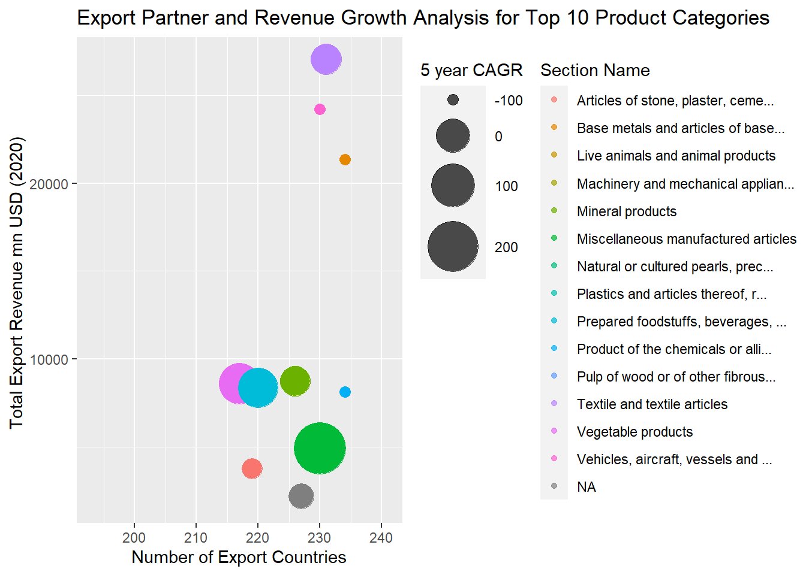
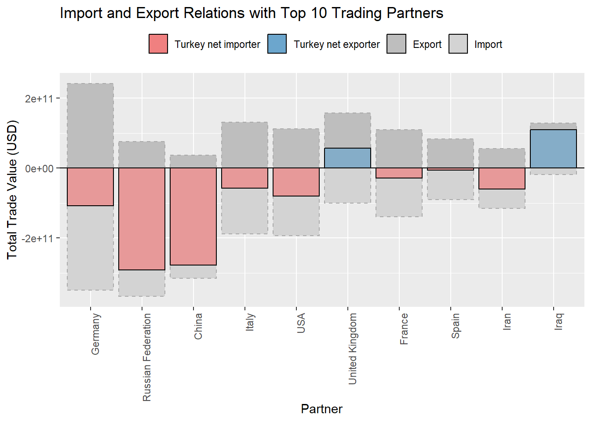
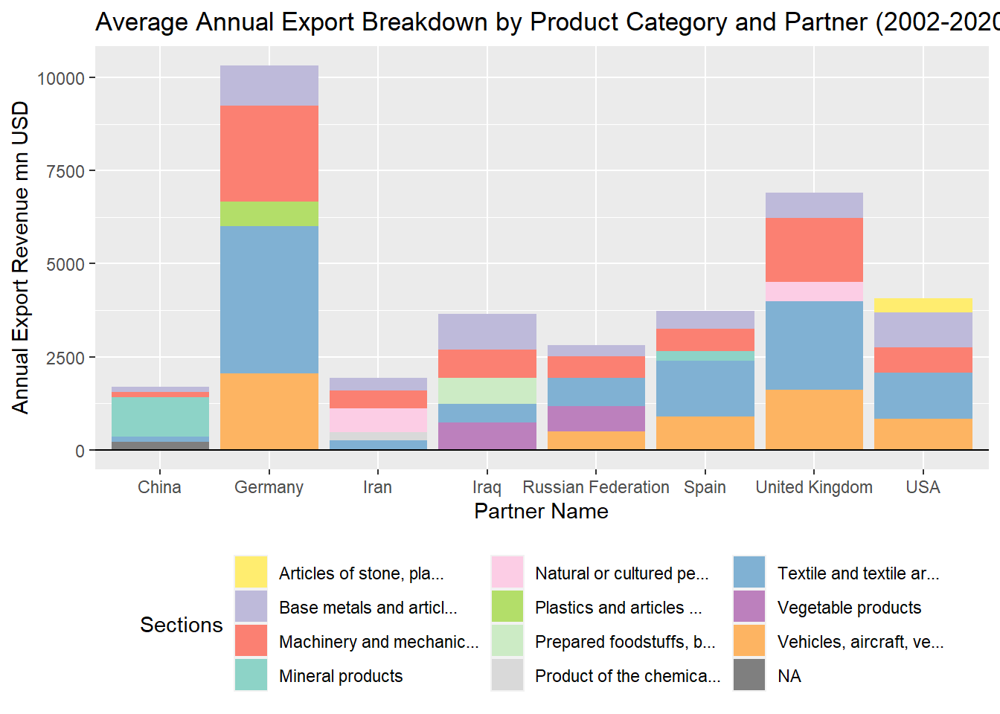

Code
loaded_datasets <- readRDS("wits_data.rds")
read_wits_turkey_data_only <- loaded_datasets$wits_turkey_data_only
read_wits_turkey_data_with_partners <- loaded_datasets$wits_turkey_data_with_partnersThe choice of this domain stems from the significance of Turkey’s role in the global trade landscape between 2002-2020. We utilized a table generated within the ‘data’ package, developed by a team led by Mauricio Vargas. This package retrieves its data from https://api.tradestatistics.io/
loaded_datasets <- readRDS("wits_data.rds")
read_wits_turkey_data_only <- loaded_datasets$wits_turkey_data_only
read_wits_turkey_data_with_partners <- loaded_datasets$wits_turkey_data_with_partnersDataset 1: This data set shows Turkey’s export and import values with product categories & related commodities’ names & codes only
str(read_wits_turkey_data_only)Classes 'data.table' and 'data.frame': 90663 obs. of 9 variables:
$ year : int 2002 2003 2004 2005 2006 2007 2008 2009 2010 2011 ...
$ reporter_iso : chr "tur" "tur" "tur" "tur" ...
$ reporter_name : chr "Turkey" "Turkey" "Turkey" "Turkey" ...
$ commodity_code : chr "010121" "010121" "010121" "010121" ...
$ commodity_name : chr "Horses; live, pure-bred breeding animals" "Horses; live, pure-bred breeding animals" "Horses; live, pure-bred breeding animals" "Horses; live, pure-bred breeding animals" ...
$ section_code : chr "01" "01" "01" "01" ...
$ section_name : chr "Live animals and animal products" "Live animals and animal products" "Live animals and animal products" "Live animals and animal products" ...
$ trade_value_usd_imp: num 6307262 1231248 958946 1111437 3684454 ...
$ trade_value_usd_exp: num 0 136000 0 22750 403711 ...
- attr(*, ".internal.selfref")=<externalptr>
- attr(*, "sorted")= chr [1:2] "commodity_code" "section_code"summary(read_wits_turkey_data_only) year reporter_iso reporter_name commodity_code
Min. :2002 Length:90663 Length:90663 Length:90663
1st Qu.:2006 Class :character Class :character Class :character
Median :2011 Mode :character Mode :character Mode :character
Mean :2011
3rd Qu.:2016
Max. :2020
commodity_name section_code section_name trade_value_usd_imp
Length:90663 Length:90663 Length:90663 Min. :0.000e+00
Class :character Class :character Class :character 1st Qu.:4.259e+05
Mode :character Mode :character Mode :character Median :3.138e+06
Mean :3.836e+07
3rd Qu.:1.574e+07
Max. :4.073e+10
trade_value_usd_exp
Min. :0.000e+00
1st Qu.:9.152e+04
Median :1.150e+06
Mean :2.612e+07
3rd Qu.:8.788e+06
Max. :1.334e+10 Dataset 2: This data set shows Turkey’s and its partners’ export and import values with product categories & related commodities’ names & codes
str(read_wits_turkey_data_with_partners)Classes 'data.table' and 'data.frame': 3887005 obs. of 11 variables:
$ year : int 2018 2019 2018 2005 2008 2002 2003 2004 2005 2006 ...
$ reporter_iso : chr "tur" "tur" "tur" "tur" ...
$ reporter_name : chr "Turkey" "Turkey" "Turkey" "Turkey" ...
$ partner_iso : chr "arg" "aus" "aut" "aze" ...
$ partner_name : chr "Argentina" "Australia" "Austria" "Azerbaijan" ...
$ commodity_code : chr "010121" "010121" "010121" "010121" ...
$ commodity_name : chr "Horses; live, pure-bred breeding animals" "Horses; live, pure-bred breeding animals" "Horses; live, pure-bred breeding animals" "Horses; live, pure-bred breeding animals" ...
$ section_code : chr "01" "01" "01" "01" ...
$ section_name : chr "Live animals and animal products" "Live animals and animal products" "Live animals and animal products" "Live animals and animal products" ...
$ trade_value_usd_imp: num 14926 7757 26155 6784 0 ...
$ trade_value_usd_exp: num 0 0 0 0 10250 ...
- attr(*, ".internal.selfref")=<externalptr>
- attr(*, "sorted")= chr [1:2] "commodity_code" "section_code"summary(read_wits_turkey_data_with_partners) year reporter_iso reporter_name partner_iso
Min. :2002 Length:3887005 Length:3887005 Length:3887005
1st Qu.:2008 Class :character Class :character Class :character
Median :2013 Mode :character Mode :character Mode :character
Mean :2012
3rd Qu.:2017
Max. :2020
partner_name commodity_code commodity_name section_code
Length:3887005 Length:3887005 Length:3887005 Length:3887005
Class :character Class :character Class :character Class :character
Mode :character Mode :character Mode :character Mode :character
section_name trade_value_usd_imp trade_value_usd_exp
Length:3887005 Min. :0.000e+00 Min. :0.000e+00
Class :character 1st Qu.:0.000e+00 1st Qu.:4.230e+02
Mode :character Median :0.000e+00 Median :8.367e+03
Mean :8.947e+05 Mean :6.093e+05
3rd Qu.:1.157e+04 3rd Qu.:8.157e+04
Max. :1.749e+10 Max. :6.528e+09 sapply(read_wits_turkey_data_only, function(x) sum(is.na(x))) year reporter_iso reporter_name commodity_code
0 0 0 0
commodity_name section_code section_name trade_value_usd_imp
0 0 19 0
trade_value_usd_exp
0 sapply(read_wits_turkey_data_with_partners, function(x) sum(is.na(x))) year reporter_iso reporter_name partner_iso
0 0 0 0
partner_name commodity_code commodity_name section_code
0 0 0 0
section_name trade_value_usd_imp trade_value_usd_exp
2986 0 0 unique_values <- unique(read_wits_turkey_data_with_partners$section_name)
rows_with_missing_values <- read_wits_turkey_data_with_partners[is.na(read_wits_turkey_data_with_partners$section_name), ]We have identified rows with missing values in the column which are labelled as commodities that are not specified according to a kind. Since these rows contain both export and import values crucial for our overall analysis, we have opted not to remove them. Instead, we flagged them as NA for further analysis
Turkey has experienced a consistent upward trajectory in both exports and imports from 2002 to 2020, as displayed in the y axis with aggregated amount of trade value in USDs throughout the analysis period and years in x axis.
Key Findings: Important aspects to consider with this analysis include consistent upward trajectory, influence factors such as global financial crisis, monetary policies of trade partners and currency fluctuations. Turkey’s net position has always been negative. (total exports value - total imports value = foreign trade deficit).
Interestingly, the foreign trade deficit expanded between 2011 and 2014 (inclusive of both start and end years) and began to diminish from 2015 to 2020, except for a spike in 2017. We will delve deeper into the yearly dynamics and extend our analysis by examining product categories and trade partners.
total_exports<- read_wits_turkey_data_only %>%
group_by(year) %>%
summarize(total_exports = sum(trade_value_usd_exp))
te_e <- total_exports$total_exports
total_imports <- read_wits_turkey_data_only %>%
group_by(year) %>%
summarize(total_imports = sum(trade_value_usd_imp))
ti_i <- total_imports$total_imports
# Visualize exports and imports over the years
ggplot() +
geom_line(data = total_exports, aes(x = year, y = (te_e / 1e6), color = "Exports"), size = 1.5) +
geom_line(data = total_imports, aes(x = year, y = (ti_i / 1e6), color = "Imports"), size = 1.5) +
labs(title = "Turkey's Exports and Imports Over the Years", x = "Year", y = "Trade Value (USD)",
)
The chart illustrated below shows Turkey’s foreign trade deficit in lightcoral colored column with year data on x axis, trade values on y axis.
# Calculate total trade for each year
yearly_trade <- read_wits_turkey_data_with_partners %>%
group_by(year) %>%
summarize(total_trade = sum(trade_value_usd_exp + trade_value_usd_imp)) %>%
arrange(desc(year))
# Calculate total export and import for each year
yearly_trade_net <- read_wits_turkey_data_with_partners %>%
group_by(year) %>%
summarize(total_export = sum(trade_value_usd_exp),
total_import = sum(trade_value_usd_imp)) %>%
arrange(desc(year))
# Calculate the net difference
yearly_trade_net <- yearly_trade_net %>%
mutate(trade_difference = total_export - total_import)%>%
na.omit()
# Visualize import and export by year
ggplot(data = yearly_trade_net, aes(x = year)) +
geom_bar(aes(y = total_export, fill = "Export"), stat = "identity", position = "dodge",color = "darkgray", linetype = "dashed" ) +
geom_bar(aes(y = -total_import, fill = "Import"), stat = "identity", position = "dodge",color = "darkgray", linetype = "dashed") +
geom_bar(aes(y = trade_difference, fill = factor(sign(trade_difference))),
stat = "identity", position = "dodge", color = "black", alpha=0.7) +
labs(title = "Net Trade Position of Turkey",
x = "Year", y = "Total Trade Value (USD)") +
scale_fill_manual(values = c("Export" = "gray", "Import" = "lightgray",
"1" = "skyblue3", "-1" = "lightcoral"),
name = "",
labels = c("Net importer", "Export", "Import")) +
geom_hline(yintercept = 0, linetype = "solid", color = "black", size = 0.5) + # Add horizontal line at y = 0
theme(axis.text.x = element_text(angle = 90, hjust = 1),
legend.position = "right")
Let’s conduct a more in-depth analysis to determine the product categories in which Turkey holds a strong position in its exports.
Turkey’s annual export revenue on average throughout the analysis period is ~125bn USD, as calculated below:
# Calculate the annual export revenue througout the analysis period (by taking average)
annual_export_value<-read_wits_turkey_data_with_partners %>%
summarise(annual_export_value = sum(trade_value_usd_exp))
print(annual_export_value/19000000) # in mn USDs annual_export_value
1 124642.6We examined annual export income of each product category listed under top 10. Below list shows the ranking of each product category which generates the highest annual export income throughout the analysis period.
Key Findings:
Turkey’s top 10 export revenues constitutes 89% of total export income. Textiles and apparel, machinery and equipment, vehicles and associated equipment, as well as base metals and mineral products, are the significant contributors to Turkey’s export revenue.
Important aspects to consider with this analysis include key export players in Turkey and key trade partners that Turkey have, top product categories’ yearly trends and fluctuations over the analysis period.
Definition: Annual export income: aggregated amount of trade value of each product category/analysis period (19 years)
top_export_products <- read_wits_turkey_data_only %>%
group_by(section_name) %>%
summarize(total_export = sum(trade_value_usd_exp)/19) %>%
na.omit()
top_export_products <- top_export_products %>%
arrange(desc(total_export))
top_export_products$total_export <- scales::number_format(suffix = " mn")(top_export_products$total_export / 1e6)
DT::datatable(top_export_products, colnames = c('Section Name', 'Annual Export Income (USD) (2002-2020)'),options = list(pageLength = 10))Below column chart illustrates top 10 product categories’ annual export income throughout the analysis period, y-axis with annual export income and x-axis with years.
export_plot_data <- read_wits_turkey_data_only %>%
group_by(section_name) %>%
summarize(total_export = sum(trade_value_usd_exp)/19000000) %>%
top_n(10)
# Truncate section names to the first 20 characters
export_plot_data$truncated_name <- str_trunc(export_plot_data$section_name, 50)
# Get distinct truncated names for colors
color_names <- unique(export_plot_data$truncated_name)
# Generate a limited number of distinct colors
colors <- brewer.pal(length(color_names), "Set3")
ggplot(data = export_plot_data, aes(x = reorder(section_name, -total_export), y = total_export, fill = truncated_name)) +
geom_bar(stat = "identity", color = "black") +
labs(title = "Top 10 Diversity of Exported Products (2002-2020, Turkey)", x = "Products", y = "Total Export Value (USD)") +
geom_hline(yintercept = 0, linetype = "solid", color = "black", size = 0.5) + # Add horizontal line at y = 0
theme(axis.text.x = element_blank(), axis.title.x = element_blank(), legend.position = "bottom") +
guides(fill = guide_legend(nrow = 5)) +
scale_fill_manual(values = setNames(colors, color_names), name = "")Let’s examine the trend analysis of these product categories from 2002 to 2020
Key Findings:
Fluctuations in natural and mineral product exports require further investigation. Initial thoughts focused on factors like steel industry dynamics, potential sanctions and commodity crises. Additionally, fluctuations in Turkey’s gold exports and imports which exhibited up and downs over recent years are also considered.
In 2020, a downward trend was noted in every product category, except for essential items such as vegetable products, plastics, and foodstuff, which exhibited inelastic demand and remained resilient during the pandemic.
library(dplyr)
top_exports_products <- read_wits_turkey_data_only %>%
group_by(section_name) %>%
summarize(total_export = sum(trade_value_usd_exp)) %>%
top_n(9)%>%
na.omit()
top_exports_products <- top_exports_products %>%
mutate(
section_name = case_when(
str_detect(section_name, "^Machinery and mechanical appliances") ~ "Machinery Products",
str_detect(section_name, "^Base metals") ~ "Base Metal Products",
str_detect(section_name, "^Natural or") ~ "Natural Products",
str_detect(section_name, "^Vehicles,") ~ "Vehicles Equipment",
str_detect(section_name, "^Plastics and articles") ~ "Plastics",
str_detect(section_name, "^Product of the chemicals") ~ "Chemicals",
str_detect(section_name, "^Prepared foodstuffs,") ~ "Foodstuffs and Tobacco",
TRUE ~ as.character(section_name)
)
)
read_wits_turkey_data_with_partners_edit <- read_wits_turkey_data_with_partners%>%
mutate(
section_name = case_when(
str_detect(section_name, "^Machinery and mechanical appliances") ~ "Machinery Products",
str_detect(section_name, "^Base metals") ~ "Base Metal Products",
str_detect(section_name, "^Natural or") ~ "Natural Products",
str_detect(section_name, "^Vehicles,") ~ "Vehicles Equipment",
str_detect(section_name, "^Plastics and articles") ~ "Plastics",
str_detect(section_name, "^Product of the chemicals") ~ "Chemicals",
str_detect(section_name, "^Prepared foodstuffs,") ~ "Foodstuffs and Tobacco",
TRUE ~ as.character(section_name)
)
)
# Filter the data with the selected top import products
export_plot_data <- read_wits_turkey_data_with_partners_edit %>%
filter(section_name %in% top_exports_products$section_name)%>%
group_by(year, section_name) %>%
summarize(total_export = sum(trade_value_usd_exp)) %>%
ungroup()
# Create the plot with geom_point
ggplot(data = export_plot_data, aes(x = year, y = total_export/1000000, color = section_name)) +
geom_line(size = 1.2) +
facet_wrap(~section_name, scales = "free_y", ncol = 3, labeller = labeller(NULL)) +
labs(title = "Export Trends of Top Products (2002-2020, Turkey)", x = "Year", y = "Total Export Value (mn USD)") +
theme(legend.position = "none") # Remove legend
Let’s conduct a more in-depth analysis to determine the product categories in which Turkey is most dependent on its imports.
Turkey’s import value on average throughout the analysis period is ~183 bn USD, as calculated below:
# Calculate the annual export revenue througout the analysis period (by taking average)
annual_import_value<-read_wits_turkey_data_with_partners %>%
summarise(annual_imp_value = sum(trade_value_usd_imp))
print(annual_import_value/19000000) # in mn USDs annual_imp_value
1 183046.7We examined annual import value of each product category listed under top 10. Below list shows the ranking of each product category which generates the highest annual import value throughout the analysis period.
Key Findings:
Turkey’s top 10 import value constitute 81% of total imports. Machinery and equipment, base metals and their articles, mineral products, chemicals as well as vehicles and associated equipment constitute the primary import categories contributing to Turkey’s import value.
Important aspects to consider with this analysis include key importers, top product categories’ yearly trends and fluctuations over the analysis period.
Definition: Annual import value: aggregated amount of trade value of each product category/analysis period (19 years)
top_import_products <- read_wits_turkey_data_only %>%
group_by(section_name) %>%
summarize(total_import = sum(trade_value_usd_imp)/19) %>%
na.omit()
top_import_products <- top_import_products %>%
arrange(desc(total_import))
top_import_products$total_import <- scales::number_format(suffix = " mn")(top_import_products$total_import / 1e6)
datatable(top_import_products, colnames = c('Section Name', 'Annual Import Value (USD)'),options = list(pageLength = 10))Below column chart illustrates top 10 product categories’ annual import value throughout the analysis period, y-axis with annual import value and x-axis with years.
imported_plot_data <- read_wits_turkey_data_only %>%
group_by(section_name) %>%
summarize(total_import = sum(trade_value_usd_imp)) %>%
top_n(10)
# Truncate section names to the first 20 characters
imported_plot_data$truncated_name <- str_trunc(imported_plot_data$section_name, 50)
# Get distinct truncated names for colors
color_names <- unique(imported_plot_data$truncated_name)
# Generate a limited number of distinct colors
colors <- brewer.pal(length(color_names), "Set3")
ggplot(data = imported_plot_data, aes(x = reorder(section_name, -total_import), y = total_import, fill = truncated_name)) +
geom_bar(stat = "identity", color = "black") +
labs(title = "Top 10 Diversity of Imported Products (2002-2020, Turkey)", x = "Products", y = "Total Import Value (USD)") +
geom_hline(yintercept = 0, linetype = "solid", color = "black", size = 0.5) + # Add horizontal line at y = 0
theme(axis.text.x = element_blank(), axis.title.x = element_blank(), legend.position = "bottom") +
guides(fill = guide_legend(nrow = 5)) +
scale_fill_manual(values = setNames(colors, color_names), name = "")
Let’s examine the trend analysis of these product categories from 2002 to 2020
Key Findings:
Slowdown in imports of all product categories is initially observed in 2009 reflecting the effects of global crisis in 2008.
Import values of mineral and natural products fluctuated during analysis period, requires further investigation as it has been mentioned in exports section.
Analysis for product categories of vegetables and plastics under export section remains applicable for imports, showcasing inelastic demand during pandemic.
top_import_products <- read_wits_turkey_data_only %>%
group_by(section_name) %>%
summarize(total_import = sum(trade_value_usd_imp)) %>%
top_n(10)%>%
na.omit()
top_import_products <- top_import_products %>%
mutate(
section_name = case_when(
str_detect(section_name, "^Machinery and mechanical appliances") ~ "Machinery Products",
str_detect(section_name, "^Base metals") ~ "Metal Products",
str_detect(section_name, "^Natural or") ~ "Natural Products",
str_detect(section_name, "^Vehicles,") ~ "Transport Equipment",
str_detect(section_name, "^Plastics and articles") ~ "Plastics",
str_detect(section_name, "^Product of the chemicals") ~ "Chemicals",
TRUE ~ as.character(section_name)
)
)
read_wits_turkey_data_with_partners_edit <- read_wits_turkey_data_with_partners%>%
mutate(
section_name = case_when(
str_detect(section_name, "^Machinery and mechanical appliances") ~ "Machinery Products",
str_detect(section_name, "^Base metals") ~ "Metal Products",
str_detect(section_name, "^Natural or") ~ "Natural Products",
str_detect(section_name, "^Vehicles,") ~ "Transport Equipment",
str_detect(section_name, "^Plastics and articles") ~ "Plastics",
str_detect(section_name, "^Product of the chemicals") ~ "Chemicals",
TRUE ~ as.character(section_name)
)
)
# Filter the data with the selected top import products
import_plot_data <- read_wits_turkey_data_with_partners_edit %>%
filter(section_name %in% top_import_products$section_name) %>%
group_by(year, section_name) %>%
summarize(total_import = sum(trade_value_usd_imp)) %>%
ungroup()
# Create the plot with geom_point
ggplot(data = import_plot_data, aes(x = year, y = total_import, color = section_name)) +
geom_line(size = 1.2) +
facet_wrap(~section_name, scales = "free_y", ncol = 3, labeller = labeller(NULL)) +
labs(title = "Import Trends of Top 9 Products (2002-2020, Turkey)", x = "Year", y = "Total Import Value (USD)") +
theme(legend.position = "none") # Remove legend
This chart aims to assess Turkey’s revenue generation capacity by scrutinizing top 10 product category.
The focus is to understand diversity of Turkey’s trade partners, identifying leading revenue generators in 2020 and evaluating the performance of these revenue categories over the last five years.
Key Findings:
Important aspects to consider with this analysis include trade partner diversification of Turkey’s revenue streams, significant export revenue contributor categories’ performance within the last 5 year.
Interestingly, Textiles and Apparel, Vehicles and Associated Equipment and Base Metals and Mineral exhibits a trend of non-growth or decline in revenue generation, which are among the highest revenue generator in 2020.
Conversely, Mineral Products, Miscellaneous Manufactured Articles, Vegetable Products and Plastics demonstrated an increased capacity for revenue generation over the last five years, albeit still trailing behind the primary product categories mentioned earlier.
Definition: Each bubble represents compounded annual growth rate of export income within the last 5 years, 2015-2020) for each product category. Export revenue value of 2020 generated from each product category that is colored in the bubbles is on y-axis, while number of distinct trade partners in on x axis.5 year compounded growth rate is calculated by dividing total trade value generated in 2020 by total trade value generated in 2015, the result is raised to an exponent of one divided by five years, one was subtracted from the subsequent result and multiplied by 100 to be presented as percentage
# Find the top 10 section_name based on trade_value
top_sections <- read_wits_turkey_data_with_partners %>%
group_by(section_name) %>%
summarize(total_export = sum(trade_value_usd_exp)) %>%
arrange(desc(total_export)) %>%
head(15)
# Step 2: Filter the dataframe to include only the top 10 section_names
read_wits_turkey_data_with_partners_top10 <- read_wits_turkey_data_with_partners %>%
filter(section_name %in% top_sections$section_name)
# Step 3: Count partner_names corresponding to the top 10 section_names in the entire dataframe
read_wits_turkey_data_with_partners_top10 <- read_wits_turkey_data_with_partners_top10 %>%
group_by(section_name) %>%
mutate(partner_count = n_distinct(partner_name)) %>%
ungroup()
read_wits_turkey_data_with_partners_top10 <- read_wits_turkey_data_with_partners_top10 %>%
group_by(section_name) %>%
mutate(cagr = ((trade_value_usd_exp[2020]/trade_value_usd_exp[2015])^(1/5)-1)*100) %>%
ungroup()
read_wits_turkey_data_with_partners_top10 <- read_wits_turkey_data_with_partners_top10 %>%
filter(year == 2020) %>%
group_by(section_name) %>%
mutate(total_trade_value_exp_2020 = sum(trade_value_usd_exp)/1000000) %>%
ungroup()
# Truncate section names to the first 35 characters
read_wits_turkey_data_with_partners_top10$truncated_name <- str_trunc(read_wits_turkey_data_with_partners_top10$section_name, 35)
# Get distinct truncated names for colors
color_names <- read_wits_turkey_data_with_partners_top10$truncated_name
ggplot(read_wits_turkey_data_with_partners_top10, aes(x = partner_count, y = total_trade_value_exp_2020, size = cagr, color = truncated_name)) +
geom_point(alpha = 0.7) +
scale_size_continuous(range = c(3, 15)) +
scale_y_continuous(limits = c(min(read_wits_turkey_data_with_partners_top10$total_trade_value_exp_2020), max(read_wits_turkey_data_with_partners_top10$total_trade_value_exp_2020) + 5)) + # adjust y-axis scale
scale_x_continuous(limits = c(min(read_wits_turkey_data_with_partners_top10$partner_count), max(read_wits_turkey_data_with_partners_top10$partner_count) + 5)) + # adjust x-axis scale
scale_color_manual(values = scales::hue_pal()(length(unique(read_wits_turkey_data_with_partners_top10$section_name)))) + # Use a different color palette
labs(title = "Export Partner and Revenue Growth Analysis for Top 10 Product Categories",
x = "Number of Export Countries",
y = "Total Export Revenue mn USD (2020) ",
size = "5 year CAGR",
color = "Section Name") +
theme(
legend.position = "right",
legend.box = "horizontal",
legend.margin = margin(t = 0, r = 0, b = 0, l = 0)
)
This chart aims to assess Turkey’s dependency on imports for its top 10 product categories and to understand diversity of Turkey’s trade partners, identifying leading import sources in 2020 and evaluating the performance of these sources over the last five years.
Key Findings:
Interestingly, despite declining trend in import values, machinery and mechanical appliances exhibited the highest import stream in 2020 of which has the highest number of trade partners. Conversely, plastics and chemicals demonstrated an increased import value over the last five years, albeit still trailing behind the primary product categories mentioned earlier.
Definition: Each bubble represents compounded annual growth rate of trade value within the last 5 years, 2015-2020) for each product category. Import values of 2020 generated from each product category that is colored in the bubbles is on y-axis, while number of distinct trade partners in on x axis.
# Step 1: Find the top 10 section_name based on trade_value
top_sections <- read_wits_turkey_data_with_partners %>%
group_by(section_name) %>%
summarize(total_import = sum(trade_value_usd_imp)) %>%
arrange(desc(total_import)) %>%
head(15)
# Step 2: Filter the dataframe to include only the top 10 section_names
read_wits_turkey_data_with_partners_top10 <- read_wits_turkey_data_with_partners %>%
filter(section_name %in% top_sections$section_name)
# Step 3: Count partner_names corresponding to the top 10 section_names in the entire dataframe
read_wits_turkey_data_with_partners_top10 <- read_wits_turkey_data_with_partners_top10 %>%
group_by(section_name) %>%
mutate(partner_count = n_distinct(partner_name)) %>%
ungroup()
read_wits_turkey_data_with_partners_top10 <- read_wits_turkey_data_with_partners_top10 %>%
group_by(section_name) %>%
mutate(cagr = ((trade_value_usd_imp[2020]/trade_value_usd_imp[2015])^(1/5)-1)*100) %>%
ungroup()
read_wits_turkey_data_with_partners_top10 <- read_wits_turkey_data_with_partners_top10 %>%
filter(year == 2020) %>%
group_by(section_name) %>%
mutate(total_trade_value_imp_2020 = sum(trade_value_usd_imp)/1000000) %>%
ungroup()
# Truncate section names to the first 50 characters
read_wits_turkey_data_with_partners_top10$truncated_name <- str_trunc(read_wits_turkey_data_with_partners_top10$section_name, 50)
# Get distinct truncated names for colors
color_names <- read_wits_turkey_data_with_partners_top10$truncated_name
ggplot(read_wits_turkey_data_with_partners_top10, aes(x = partner_count, y = total_trade_value_imp_2020, size = cagr, color = truncated_name)) +
geom_point(alpha = 0.7) +
scale_size_continuous(range = c(3, 15)) +
scale_y_continuous(limits = c(min(read_wits_turkey_data_with_partners_top10$total_trade_value_imp_2020), max(read_wits_turkey_data_with_partners_top10$total_trade_value_imp_2020) + 5)) + # adjust y-axis scale
scale_x_continuous(limits = c(min(read_wits_turkey_data_with_partners_top10$partner_count), max(read_wits_turkey_data_with_partners_top10$partner_count) + 5)) + # adjust x-axis scale
scale_color_manual(values = scales::hue_pal()(length(unique(read_wits_turkey_data_with_partners_top10$section_name)))) + # Use a different color palette
labs(title = "Import Partner and Import Value Growth Analysis for Top 10 Product Categories",
x = "Number of Importers",
y = "Total Import mn USD (2020) ",
size = "5 year CAGR",
color = "Section Name") +
theme(
legend.position = "right",
legend.box = "horizontal",
legend.margin = margin(t = 0, r = 0, b = 0, l = 0)
)
Turkey showcases a diverse range of trading partners. Let’s explore further to identify those that are among the top 10 for both exports and imports.
The chart presented here illustrates the top 10 trade partners in each column along with the average annual bilateral trading value (a total of exports and imports) on y-axis for each trade partners on x- axis during analysis period (2002-2020).
Key Findings:
Top 10 trade partners’ trade value (total exports+imports) with Turkey throughout the analysis period constitute 51% of total trade value
Turkey has strong relations with neighboring countries - closest relationship with Germany - followed by major economies such as China, USA and Russia.
Important aspects to consider with this analysis include, showing Turkey’s dependency on key trade partners by product categories.
top_partners <- read_wits_turkey_data_with_partners %>%
group_by(partner_name) %>%
summarize(total_trade = sum(trade_value_usd_exp + trade_value_usd_imp)/19000000) %>%
arrange(desc(total_trade)) %>%
top_n(10)
# Get a color palette from RColorBrewer
partner_colors <- brewer.pal(length(top_partners$partner_name), "Set3")
# Visualize top trading partners
ggplot(data = top_partners, aes(x = reorder(partner_name, -total_trade), y = total_trade, fill = partner_name)) +
geom_bar(stat = "identity", color = "black") +
labs(title = "Top 10 Trading Partners (2002-2022)", x = "Partner", y = "Average Trade Value (Exp+Imp) (mnUSD)") +
geom_hline(yintercept = 0, linetype = "solid", color = "black", size = 0.5) + # Add horizontal line at y = 0
theme(axis.text.x = element_text(angle = 90, hjust = 1)) +
scale_fill_manual(values = partner_colors)+
theme(legend.position = "none")
Let’s delve deeper into the analysis by specifically examining Turkey’s net exporter/importer position, the trading partners with whom Turkey increased its relations within the analysis period and on which the product categories Turkey is most dependent for its importers and holding a strong export position.
The chart presented here illustrates the top 10 trade partners in each column along with total of exports, imports and net trade values (export-import) on y-axis for each trade partners on x-axis during analysis period (2002-2020).
Key Findings:
Turkey predominantly maintains a net importer position among its major trading partners, with the exceptions of the United Kingdom and Iraq on an aggregate level throughout the analysis period. Notably, Turkey exhibits a higher dependency on Russia and China compared to other partners.
# Calculate total trade for each partner
partners <- read_wits_turkey_data_with_partners %>%
group_by(partner_name) %>%
summarize(total_trade = sum(trade_value_usd_exp + trade_value_usd_imp)) %>%
arrange(desc(total_trade)) %>%
top_n(10)
# Calculate total export and import for each top partner
top_partners <- read_wits_turkey_data_with_partners %>%
filter(partner_name %in% partners$partner_name) %>%
group_by(partner_name) %>%
summarize(total_export = sum(trade_value_usd_exp),
total_import = sum(trade_value_usd_imp)) %>%
arrange(desc(total_export + total_import)) %>%
top_n(10)%>%
na.omit()
# Calculate the net difference
top_partners <- top_partners %>%
mutate(trade_difference = total_export - total_import)%>%
na.omit()
# Visualize import and export relations with top trading partners
ggplot(data = top_partners, aes(x = reorder(partner_name, -total_export - total_import))) +
geom_bar(aes(y = total_export, fill = "Export"), stat = "identity", position = "dodge",color = "darkgray", linetype = "dashed" ) +
geom_bar(aes(y = -total_import, fill = "Import"), stat = "identity", position = "dodge",color = "darkgray", linetype = "dashed") +
geom_bar(aes(y = trade_difference, fill = factor(sign(trade_difference))),
stat = "identity", position = "dodge", color = "black", alpha=0.7) +
labs(title = "Import and Export Relations with Top 10 Trading Partners",
x = "Partner", y = "Total Trade Value (USD)") +
scale_fill_manual(values = c("Export" = "gray", "Import" = "lightgray",
"1" = "skyblue3", "-1" = "lightcoral"),
name = "",
labels = c("Turkey net importer", "Turkey net exporter", "Export", "Import")) +
geom_hline(yintercept = 0, linetype = "solid", color = "black", size = 0.5) + # Add horizontal line at y = 0
theme(axis.text.x = element_text(angle = 90, hjust = 1),
legend.position = "top")
The chart presented here illustrates the top 10 trade partners on x axis, each column represents Turkey’s net exporter/importer position with their trade value on y-axis. Analysis were made separately for each year within the last 5 years
Key Findings:
This chart gives us a clearer understanding of Turkey’s position for each year during the analysis period. Turkey has transitioned from a net importer to a net exporter for some European countries, such as Spain and France.
# Vector of countries to filter
selected_countries <- c("Germany", "Russian Federation", "China", "Italy", "USA", "United Kingdom", "France", "Spain", "Iran", "Iraq")
top_partners <- read_wits_turkey_data_with_partners %>%
filter(partner_name %in% selected_countries, year %in% 2015:2020) %>%
group_by(partner_name, year) %>%
summarize(total_export = sum(trade_value_usd_exp),
total_import = sum(trade_value_usd_imp)) %>%
mutate(trade_difference = total_export - total_import)
# Create a bar plot to show trade comparison with selected trading partners
ggplot(data = top_partners, aes(x = reorder(partner_name, -trade_difference), y = trade_difference/1000000, fill = factor(sign(trade_difference)))) +
geom_bar(stat = "identity", position = position_dodge(width = 0.8), color = "black", height = 1.5) + # Adjust the 'height' parameter
facet_wrap(~year, scales = "free_y", ncol = 3) +
scale_fill_manual(values = c("lightcoral", "skyblue3"), name = "",
labels = c("Turkey net importer", "Turkey net exporter")) +
labs(title = "Trade Comparison with Top 10 Trading Partners(2015-2020)",
x = "Partner",
y = "Trade Difference (Export - Import, mn USD)") +
theme(axis.text.x = element_text(angle = 90, hjust = 1),
legend.position = "top")
To gain a better understanding of the partners with whom Turkey has strengthened its relations the most, let’s examine the chart below, which illustrates the 5-year CAGR in total trade values for each trading partner.
The chart presented here illustrates the top 10 trade partners on x axis along with 5 year CAGR of their trade value with Turkey on y-axis.
Key Findings:
Trade relations with Iraq, special categories that are not well described in the dataset, USA and Spain have seen increased growth in trade values over the last 5 years.
In contrast, relations with Germany, France, and the UK have remained relatively flat.
Important aspects to consider with this analysis include the trend in product categories with these trading partners
# Replace "YourFirstYear" and "YourEndYear" with the actual years that is selected for the analysis
first_year <- 2015
end_year <- 2020
# Calculate the total trade value for the first and end years for each partner
total_trade_by_partner <- read_wits_turkey_data_with_partners %>%
group_by(partner_name) %>%
summarise(total_trade_first = sum(trade_value_usd_imp[year == first_year] + trade_value_usd_exp[year == first_year]),
total_trade_end = sum(trade_value_usd_imp[year == end_year] + trade_value_usd_exp[year == end_year]))
# Find the top 10 partners based on the total trade value
top_10_partners <- total_trade_by_partner %>%
top_n(10, wt = total_trade_end)
# Calculate the percentage change
percentage_change <- top_10_partners %>%
mutate(percentage_change = ((total_trade_end/total_trade_first)^(1/5)-1)*100)
# Create a lollipop chart
ggplot(percentage_change, aes(x = reorder(partner_name, percentage_change), y = percentage_change)) +
geom_segment(aes(xend = reorder(partner_name, percentage_change), yend = 0), color = "skyblue", size = 1) +
geom_point(color = "red", size = 3) +
labs(title = "Top 10 Partners: 5 year CAGR growth in Total Trade Value by 2020",
x = "Partner",
y = "5 year CAGR growth in Total Trade Value") +
theme(axis.text.x = element_text(angle = 90, hjust = 1))
On which category Turkey was the most export revenue generative, let’s have a look at the below chart:
The chart presented here illustrates the top 10 export partners on x axis, each column represent top product categories, with annual export revenue generated from them on y-axis.
Key Findings:
Major export partners of Turkey imported textile and its articles which are followed by vehicles, aircraft and machinery and mechanical components.
Export product categories do not vary significantly among the top export partners, except for China, which notably imports mineral products the most.
Important aspects to consider with this analysis include a further examination on product concentration with these trading partners
# Filter data for Iraq, Spain, and USA
trade_data_selected_partners<- read_wits_turkey_data_with_partners %>%
filter(partner_name %in% c("Germany","Russian Federation","China", "United Kingdom", "Iraq", "Spain", "USA","Iran", 1))
# Add a new column for total trade
trade_data_selected_partners <- trade_data_selected_partners%>%
mutate(total_trade_exp = (trade_value_usd_exp)/19000000)
# Group by section_name and calculate total trade values for each section_name
total_trade_values_19_year <- trade_data_selected_partners %>%
filter(year >= 2002 & year <= 2020) %>%
group_by(section_name, partner_name) %>%
summarise(total_exp_value = sum(total_trade_exp))
# Filter top 5 section names
filtered_commodity_data <- total_trade_values_19_year %>%
group_by(partner_name) %>%
arrange(desc(total_exp_value)) %>%
slice_head(n=5)
# Truncate section names to the first 20 characters
filtered_commodity_data$truncated_name <- str_trunc(filtered_commodity_data$section_name, 25)
# Set up the color palette
colors <- brewer.pal(length(unique(filtered_commodity_data$truncated_name)), "Set3")
# Map colors to truncated section names
color_mapping <- setNames(colors, unique(filtered_commodity_data$truncated_name))
# Use the color_mapping in ggplot
ggplot(filtered_commodity_data, aes(x = partner_name, y = total_exp_value, fill = truncated_name)) +
geom_col() +
scale_fill_manual(values = color_mapping) + # Set manual color scale
labs(title = "Average Annual Export Breakdown by Product Category and Partner (2002-2020)",
x = "Partner Name", y = "Annual Export Revenue mn USD",
fill = "Sections") +
geom_hline(yintercept = 0, linetype = "solid", color = "black", size = 0.5) + # Add horizontal line at y = 0
theme(legend.position = "bottom") +
guides(fill = guide_legend(nrow = 4))
On which category Turkey was the dependent, let’s have a look at importers chart:
The chart presented here illustrates the top 10 import partners on x axis, each column represent top product categories, with annual import value on y-axis.
Key Findings:
Turkey’s major trade partners are Russia, Germany and China as previously noted.
During EDA, we have realized that energy is not categorized in this dataset of which seems under NA in this illustration. Turkey’s energy dependency to Russia and Iran of which are major natural gas, crude and mineral suppliers of Turkey. Turkey terminated its crude supplies from Iran after 2018 when US imposed sanctions on Iranian products.
Examining Turkey’s major imports, it becomes evident that China and Germany play pivotal roles, particularly in the supply of machinery and mechanical components vital for industrial processes.
Conversely, Turkey exhibits minimal dependency on textile and vegetable imports, reflecting its advantageous position as a net exporter in these product categories.
Important aspects to consider with this analysis include a further examination on product concentration with these trading partners
# Filter data for Iraq, Spain, and USA
trade_data_selected_partners<- read_wits_turkey_data_with_partners %>%
filter(partner_name %in% c("Germany","Russian Federation","China", "United Kingdom", "Iraq", "Spain", "USA","Iran", 1))
# Add a new column for total trade
trade_data_selected_partners <- trade_data_selected_partners%>%
mutate(total_trade_imp = (trade_value_usd_imp)/19000000)
# Group by section_name and calculate total trade values for each section_name
total_trade_values_19_year <- trade_data_selected_partners %>%
filter(year >= 2002 & year <= 2020) %>%
group_by(section_name, partner_name) %>%
summarise(total_imp_value = sum(total_trade_imp))
# Filter top 5 section names
filtered_commodity_data <- total_trade_values_19_year %>%
group_by(partner_name) %>%
arrange(desc(total_imp_value)) %>%
slice_head(n=5)
# Truncate section names to the first 20 characters
filtered_commodity_data$truncated_name <- str_trunc(filtered_commodity_data$section_name, 25)
# Set up the color palette
colors <- brewer.pal(length(unique(filtered_commodity_data$truncated_name)), "Set3")
# Map colors to truncated section names
color_mapping <- setNames(colors, unique(filtered_commodity_data$truncated_name))
# Use the color_mapping in ggplot
ggplot(filtered_commodity_data, aes(x = partner_name, y = total_imp_value, fill = truncated_name)) +
geom_col() +
scale_fill_manual(values = color_mapping) + # Set manual color scale
labs(title = "Average Annual Import Breakdown by Product Category and Partner (2002-2020)",
x = "Partner Name", y = "Total Import mn USD",
fill = "Sections") +
geom_hline(yintercept = 0, linetype = "solid", color = "black", size = 0.5) + # Add horizontal line at y = 0
theme(legend.position = "bottom") +
guides(fill = guide_legend(nrow = 4))